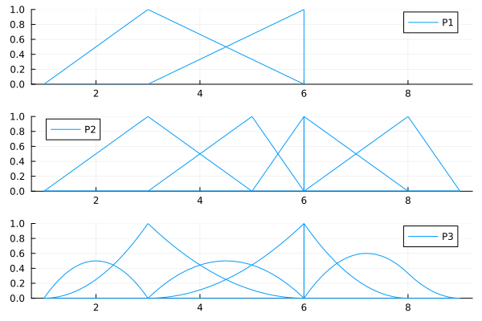
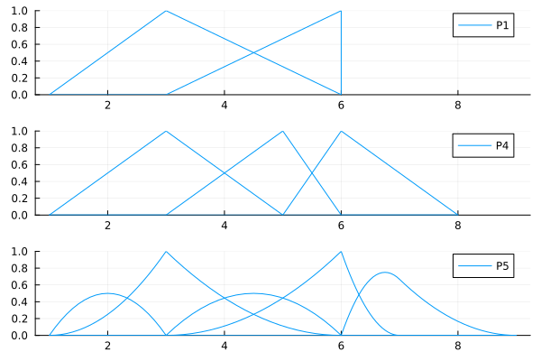
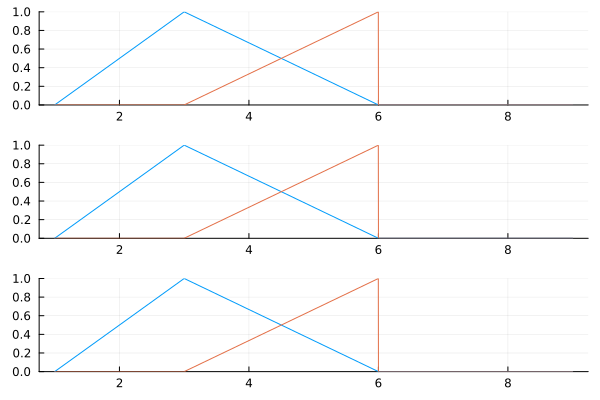
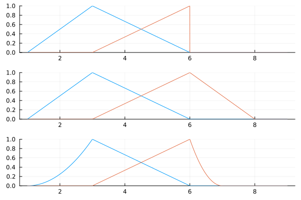

Inclusive relation between B-spline spaces
Setup
using BasicBSpline
using StaticArrays
using PlotsTheorem on issubset
For non-degenerate B-spline spaces, the following relationship holds.
\[\mathcal{P}[p,k] \subseteq \mathcal{P}[p',k'] \Leftrightarrow (m=p'-p \ge 0 \ \text{and} \ k+m\widehat{k}\subseteq k')\]
Examples
Here are plots of the B-spline basis functions of the spaces P1, P2, P3.
P1 = BSplineSpace{1}(KnotVector([1,3,6,6]))
P2 = BSplineSpace{1}(KnotVector([1,3,5,6,6,8,9]))
P3 = BSplineSpace{2}(KnotVector([1,1,3,3,6,6,6,8,9]))
gr()
plot(
plot(P1; ylims=(0,1), label="P1"),
plot(P2; ylims=(0,1), label="P2"),
plot(P3; ylims=(0,1), label="P3"),
layout=(3,1),
link=:x
)
These spaces have the folllowing incusive relationships.
julia> P1 ⊆ P2truejulia> P1 ⊆ P3truejulia> P2 ⊆ P3, P3 ⊆ P2, P2 ⊆ P1, P3 ⊆ P1(false, false, false, false)
Definition on issqsubset
For non-degenerate B-spline spaces, the following relationship holds.
\[\mathcal{P}[p,k] \sqsubseteq\mathcal{P}[p',k'] \Leftrightarrow \mathcal{P}[p,k]|_{[k_{p+1},k_{l-p}]} \subseteq\mathcal{P}[p',k']|_{[k'_{p'+1},k'_{l'-p'}]}\]
Examples
Here are plots of the B-spline basis functions of the spaces P1, P2, P3.
P1 = BSplineSpace{1}(KnotVector([1,3,6,6])) # Save definition as above
P4 = BSplineSpace{1}(KnotVector([1,3,5,6,8]))
P5 = BSplineSpace{2}(KnotVector([1,1,3,3,6,6,7,9]))
gr()
plot(
plot(P1; ylims=(0,1), label="P1"),
plot(P4; ylims=(0,1), label="P4"),
plot(P5; ylims=(0,1), label="P5"),
layout=(3,1),
link=:x
)
These spaces have the folllowing incusive relationships.
julia> P1 ⊑ P4truejulia> P1 ⊑ P5truejulia> P4 ⊑ P5, P5 ⊑ P4, P4 ⊑ P1, P5 ⊑ P1(false, false, false, false)
Change basis with a matrix
If $\mathcal{P}[p,k] \subseteq \mathcal{P}[p',k']$ (or $\mathcal{P}[p,k] \sqsubseteq \mathcal{P}[p',k']$), there exists a $n \times n'$ matrix $A$ which holds:
\[\begin{aligned} B_{(i,p,k)} &=\sum_{j}A_{ij} B_{(j,p',k')} \\ n&=\dim(\mathcal{P}[p,k]) \\ n'&=\dim(\mathcal{P}[p',k']) \end{aligned}\]
You can calculate the change of basis matrix $A$ with changebasis.
julia> A12 = changebasis(P1,P2)2×5 SparseArrays.SparseMatrixCSC{Float64, Int32} with 4 stored entries: 1.0 0.333333 ⋅ ⋅ ⋅ ⋅ 0.666667 1.0 ⋅ ⋅julia> A13 = changebasis(P1,P3)2×6 SparseArrays.SparseMatrixCSC{Float64, Int32} with 5 stored entries: 0.5 1.0 0.5 ⋅ ⋅ ⋅ ⋅ ⋅ 0.5 1.0 ⋅ ⋅
plot(
plot([t->bsplinebasis₊₀(P1,i,t) for i in 1:dim(P1)], 1, 9, ylims=(0,1), legend=false),
plot([t->sum(A12[i,j]*bsplinebasis₊₀(P2,j,t) for j in 1:dim(P2)) for i in 1:dim(P1)], 1, 9, ylims=(0,1), legend=false),
plot([t->sum(A13[i,j]*bsplinebasis₊₀(P3,j,t) for j in 1:dim(P3)) for i in 1:dim(P1)], 1, 9, ylims=(0,1), legend=false),
layout=(3,1),
link=:x
)
julia> A14 = changebasis(P1,P4)2×3 SparseArrays.SparseMatrixCSC{Float64, Int32} with 4 stored entries: 1.0 0.333333 ⋅ ⋅ 0.666667 1.0julia> A15 = changebasis(P1,P5)2×5 SparseArrays.SparseMatrixCSC{Float64, Int32} with 4 stored entries: ⋅ 1.0 0.5 ⋅ ⋅ ⋅ ⋅ 0.5 1.0 ⋅
plot(
plot([t->bsplinebasis₊₀(P1,i,t) for i in 1:dim(P1)], 1, 9, ylims=(0,1), legend=false),
plot([t->sum(A14[i,j]*bsplinebasis₊₀(P4,j,t) for j in 1:dim(P4)) for i in 1:dim(P1)], 1, 9, ylims=(0,1), legend=false),
plot([t->sum(A15[i,j]*bsplinebasis₊₀(P5,j,t) for j in 1:dim(P5)) for i in 1:dim(P1)], 1, 9, ylims=(0,1), legend=false),
layout=(3,1),
link=:x
)
changebasis_R- Calculate the matrix based on $P \subseteq P'$
changebasis_I- Calculate the matrix based on $P \sqsubseteq P'$
changebasis- Return
changebasis_Rif $P \subseteq P'$, otherwise returnchangebasis_Iif $P \sqsubseteq P'$.
- Return
Expand spaces with additional knots or polynomial degree
There are some functions to expand spaces with additional knots or polynomial degree.
julia> P = BSplineSpace{2}(knotvector"21 113")BSplineSpace{2, Int64, KnotVector{Int64}}(KnotVector([1, 1, 2, 4, 5, 6, 6, 6]))julia> P_R = expandspace_R(P, Val(1), KnotVector([3.4, 4.2]))BSplineSpace{3, Float64, KnotVector{Float64}}(KnotVector([1.0, 1.0, 1.0, 1.0, 2.0, 2.0, 3.4, 4.0, 4.0, 4.2, 5.0, 5.0, 6.0, 6.0, 6.0, 6.0, 6.0, 6.0]))julia> P_I = expandspace_I(P, Val(1), KnotVector([3.4, 4.2]))BSplineSpace{3, Float64, KnotVector{Float64}}(KnotVector([1.0, 1.0, 2.0, 2.0, 3.4, 4.0, 4.0, 4.2, 5.0, 5.0, 6.0, 6.0, 6.0, 6.0]))julia> P ⊆ P_Rtruejulia> P ⊆ P_Ifalsejulia> P ⊑ P_Rfalsejulia> P ⊑ P_Itrue